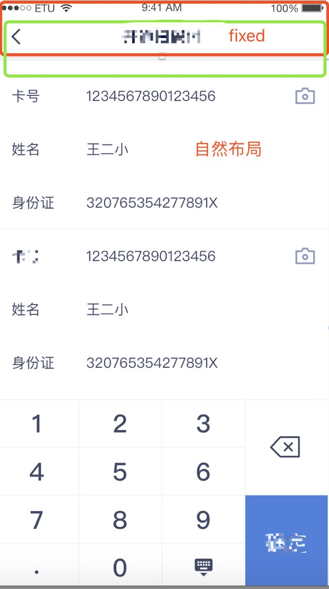
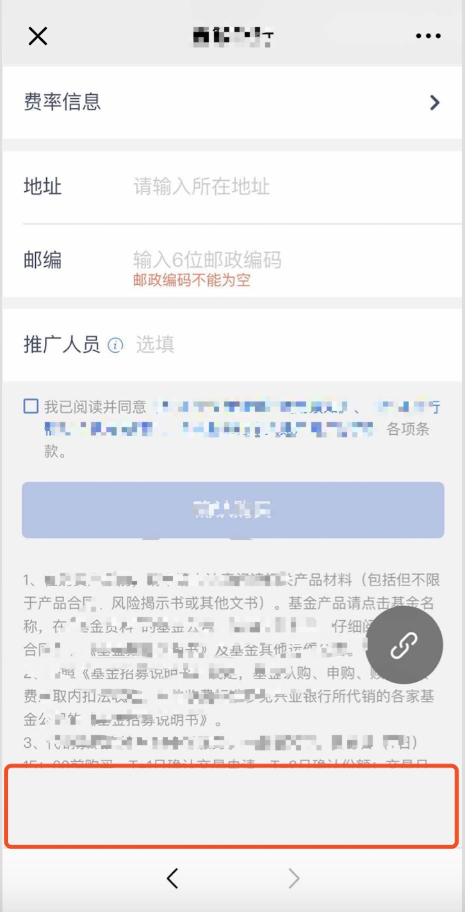
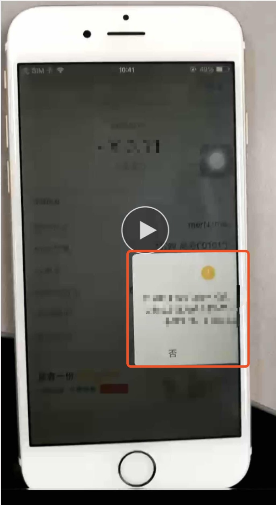
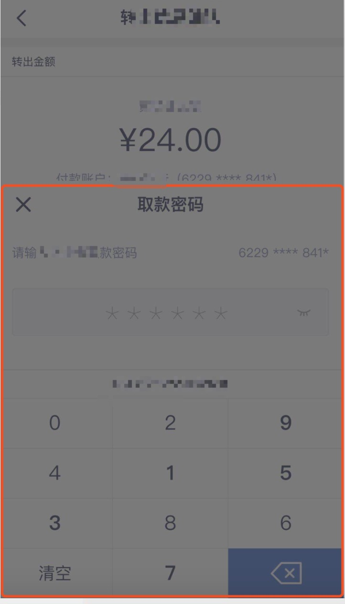
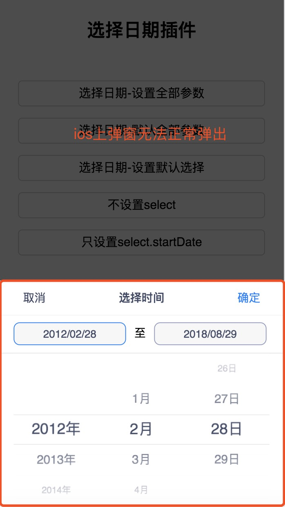
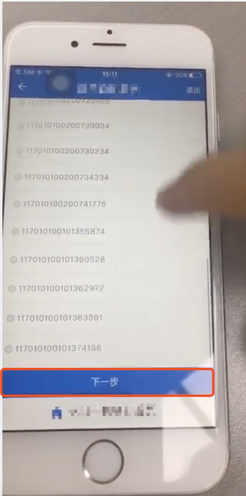
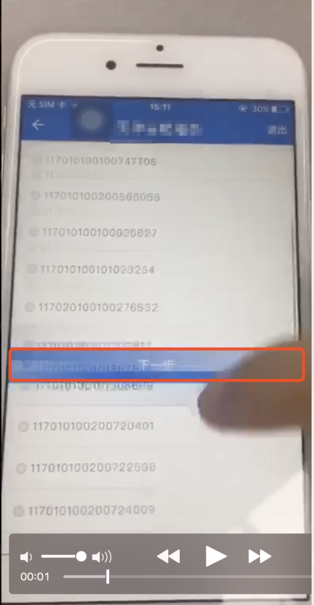
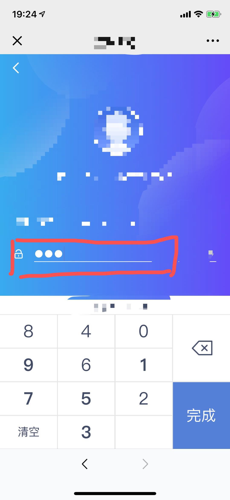

<!DOCTYPE html>
<html>
<head><meta name="generator" content="Hexo 3.8.0">
  <meta charset="utf-8">
  
  <title>移动端常见兼容性问题 | guowj</title>
  <meta name="viewport" content="width=device-width, initial-scale=1, maximum-scale=1">
  
  <meta name="keywords" content="移动端兼容性">
  
  
  
  
  <meta name="description" content="&amp;nbsp;&amp;nbsp;&amp;nbsp;&amp;nbsp;本文主要想记录下最近工作中遇到的一些移动端兼容问题，便于日后能够快速解决一些Bug。">
<meta name="keywords" content="移动端,兼容性">
<meta property="og:type" content="article">
<meta property="og:title" content="移动端常见兼容性问题">
<meta property="og:url" content="https://gwjacqueline.github.io/移动端常见兼容性问题/index.html">
<meta property="og:site_name" content="guowj">
<meta property="og:description" content="&amp;nbsp;&amp;nbsp;&amp;nbsp;&amp;nbsp;本文主要想记录下最近工作中遇到的一些移动端兼容问题，便于日后能够快速解决一些Bug。">
<meta property="og:locale" content="zh-CN">
<meta property="og:image" content="https://gwjacqueline.github.io/images/fixedBug.png">
<meta property="og:image" content="https://gwjacqueline.github.io/images/androidFixed.png">
<meta property="og:image" content="https://gwjacqueline.github.io/images/ioswx.png">
<meta property="og:image" content="https://gwjacqueline.github.io/images/transform.png">
<meta property="og:image" content="https://gwjacqueline.github.io/images/p-yellow.png">
<meta property="og:image" content="https://gwjacqueline.github.io/images/passwordInset.png">
<meta property="og:image" content="https://gwjacqueline.github.io/images/iosTime.png">
<meta property="og:image" content="https://gwjacqueline.github.io/images/iosfBtn1.png">
<meta property="og:image" content="https://gwjacqueline.github.io/images/iosfBtn2.png">
<meta property="og:image" content="https://gwjacqueline.github.io/images/iospsw.jpeg">
<meta property="og:updated_time" content="2019-04-06T10:49:03.000Z">
<meta name="twitter:card" content="summary">
<meta name="twitter:title" content="移动端常见兼容性问题">
<meta name="twitter:description" content="&amp;nbsp;&amp;nbsp;&amp;nbsp;&amp;nbsp;本文主要想记录下最近工作中遇到的一些移动端兼容问题，便于日后能够快速解决一些Bug。">
<meta name="twitter:image" content="https://gwjacqueline.github.io/images/fixedBug.png">
  
    <link rel="alternate" href="/atom.xml" title="guowj" type="application/atom+xml">
  

  

  <link rel="icon" href="/css/images/mylogo.png">
  <link rel="apple-touch-icon" href="/css/images/mylogo.png">
  
    <link href="//fonts.googleapis.com/css?family=Source+Code+Pro" rel="stylesheet" type="text/css">
  
  <link href="https://fonts.googleapis.com/css?family=Open+Sans|Montserrat:700" rel="stylesheet" type="text/css">
  <link href="https://fonts.googleapis.com/css?family=Roboto:400,300,300italic,400italic" rel="stylesheet" type="text/css">
  <link href="//netdna.bootstrapcdn.com/font-awesome/4.0.3/css/font-awesome.css" rel="stylesheet">
  <style type="text/css">
    @font-face{font-family:futura-pt; src:url("../css/fonts/FuturaPTBold.otf") format("woff");font-weight:500;font-style:normal;}
    @font-face{font-family:futura-pt-light; src:url("../css/fonts/FuturaPTBook.otf") format("woff");font-weight:lighter;font-style:normal;}
    @font-face{font-family:futura-pt-italic; src:url("../css/fonts/FuturaPTBookOblique.otf") format("woff");font-weight:400;font-style:italic;}
}

  </style>
  <link rel="stylesheet" href="/css/style.css">

  <script src="/js/jquery-3.1.1.min.js"></script>
  <script src="/js/bootstrap.js"></script>

  <!-- Bootstrap core CSS -->
  <link rel="stylesheet" href="/css/bootstrap.css">

  
    <link rel="stylesheet" href="/css/dialog.css">
  

  

  
    <link rel="stylesheet" href="/css/header-post.css">
  

  
  
  
    <link rel="stylesheet" href="/css/vdonate.css">
  

</head>
</html>


  <body data-spy="scroll" data-target="#toc" data-offset="50">


  
  <div id="container">
    <div id="wrap">
      
        <header>

    <div id="allheader" class="navbar navbar-default navbar-static-top" role="navigation">
        <div class="navbar-inner">
          
          <div class="container"> 
            <button type="button" class="navbar-toggle" data-toggle="collapse" data-target=".navbar-collapse">
              <span class="sr-only">Toggle navigation</span>
              <span class="icon-bar"></span>
              <span class="icon-bar"></span>
              <span class="icon-bar"></span>
            </button>

            
              <a class="brand" style="
                 margin-top: 0px;" href="#" data-toggle="modal" data-target="#myModal">
                  
              </a>
            
            
            <div class="navbar-collapse collapse">
              <ul class="hnav navbar-nav">
                
                  <li> <a class="main-nav-link" href="/">首页</a> </li>
                
                  <li> <a class="main-nav-link" href="/archives">归档</a> </li>
                
                  <li> <a class="main-nav-link" href="/categories">分类</a> </li>
                
                  <li> <a class="main-nav-link" href="/tags">标签</a> </li>
                
                  <li> <a class="main-nav-link" href="/about">关于</a> </li>
                
                  <li><div id="search-form-wrap">

    <form class="search-form">
        <input type="text" class="ins-search-input search-form-input" placeholder>
        <button type="submit" class="search-form-submit"></button>
    </form>
    <div class="ins-search">
    <div class="ins-search-mask"></div>
    <div class="ins-search-container">
        <div class="ins-input-wrapper">
            <input type="text" class="ins-search-input" placeholder="请输入关键词...">
            <span class="ins-close ins-selectable"><i class="fa fa-times-circle"></i></span>
        </div>
        <div class="ins-section-wrapper">
            <div class="ins-section-container"></div>
        </div>
    </div>
</div>
<script>
(function (window) {
    var INSIGHT_CONFIG = {
        TRANSLATION: {
            POSTS: '文章',
            PAGES: '页面',
            CATEGORIES: '分类',
            TAGS: '标签',
            UNTITLED: '(无标题)',
        },
        ROOT_URL: '/',
        CONTENT_URL: '/content.json',
    };
    window.INSIGHT_CONFIG = INSIGHT_CONFIG;
})(window);
</script>
<script src="/js/insight.js"></script>

</div></li>
            </ul></div>
          </div>
                
      </div>
    </div>

</header>


      
            
      <div id="content" class="outer">
        
          <section id="main" style="float:none;"><article id="post-移动端常见兼容性问题" style="width: 75%; float:left;" class="article article-type-post" itemscope itemprop="blogPost">
  <div id="articleInner" class="article-inner">
    
    
      <header class="article-header">
        
  
    <h1 class="thumb" itemprop="name">
      移动端常见兼容性问题
    </h1>
  

      </header>
    
    <div class="article-meta">
      
	<a href="/移动端常见兼容性问题/" class="article-date">
	  <time datetime="2019-04-06T10:49:03.000Z" itemprop="datePublished">2019-04-06</time>
	</a>

      
    <a class="article-category-link" href="/categories/css/">css</a>

      
	<a class="article-views">
	<span id="busuanzi_container_page_pv">
		阅读量<span id="busuanzi_value_page_pv"></span>
	</span>
	</a>

      

    </div>
    <div class="article-entry" itemprop="articleBody">
      
        <blockquote>
<p>&nbsp;&nbsp;&nbsp;&nbsp;本文主要想记录下最近工作中遇到的一些移动端兼容问题，便于日后能够快速解决一些Bug。<br><a id="more"></a></p>
</blockquote>
<h3 id="ios-fixed定位-长表单"><a href="#ios-fixed定位-长表单" class="headerlink" title="ios fixed定位+长表单"></a>ios fixed定位+长表单</h3><p><div align="center"><br>  <br></div></p>
<h4 id="主要代码："><a href="#主要代码：" class="headerlink" title="主要代码："></a>主要代码：</h4><figure class="highlight plain"><table><tr><td class="gutter"><pre><span class="line">1</span><br><span class="line">2</span><br><span class="line">3</span><br><span class="line">4</span><br><span class="line">5</span><br><span class="line">6</span><br><span class="line">7</span><br><span class="line">8</span><br></pre></td><td class="code"><pre><span class="line">&lt;body&gt;</span><br><span class="line">  &lt;header&gt;</span><br><span class="line">      &lt;!-- fixed定位的头部 --&gt;</span><br><span class="line">  &lt;header&gt;</span><br><span class="line">  &lt;section&gt;</span><br><span class="line">      &lt;!-- 自然布局 --&gt;</span><br><span class="line">  &lt;/section&gt;</span><br><span class="line">&lt;/body&gt;</span><br></pre></td></tr></table></figure>
<h4 id="bug描述："><a href="#bug描述：" class="headerlink" title="bug描述："></a>bug描述：</h4><p>只有在ios上出现：当section过长(有滚动条时)，表单获取焦点时。上图红色框的头部会掉落至绿色部分。</p>
<h4 id="bug解决："><a href="#bug解决：" class="headerlink" title="bug解决："></a>bug解决：</h4><p>造成问题的原因：当表单获取焦点，键盘弹出时，可视高度变小。<br>解决方式：表单获取焦点时，把fixed定位改成absolute;失去焦点时，改回来。<br>个人建议：在实际开发中，避免让头部使用fixed定位。页面整体建议采用flex布局，减少页面高度计算。</p>
<h3 id="Android-footer-绝对定位"><a href="#Android-footer-绝对定位" class="headerlink" title="Android footer 绝对定位"></a>Android footer 绝对定位</h3><p><div align="center"><br>  <br></div></p>
<h4 id="主要代码：-1"><a href="#主要代码：-1" class="headerlink" title="主要代码："></a>主要代码：</h4><figure class="highlight plain"><table><tr><td class="gutter"><pre><span class="line">1</span><br><span class="line">2</span><br><span class="line">3</span><br><span class="line">4</span><br><span class="line">5</span><br><span class="line">6</span><br><span class="line">7</span><br><span class="line">8</span><br><span class="line">9</span><br><span class="line">10</span><br><span class="line">11</span><br></pre></td><td class="code"><pre><span class="line">&lt;body&gt;</span><br><span class="line">  &lt;header&gt;</span><br><span class="line">      &lt;!-- absolute定位的头部 --&gt;</span><br><span class="line">  &lt;header&gt;</span><br><span class="line">  &lt;section&gt;</span><br><span class="line">      &lt;!-- 自然布局 --&gt;</span><br><span class="line">  &lt;/section&gt;</span><br><span class="line">  &lt;section&gt;</span><br><span class="line">      &lt;!-- fixed定位的footer --&gt;</span><br><span class="line">  &lt;/section&gt;</span><br><span class="line">&lt;/body&gt;</span><br></pre></td></tr></table></figure>
<h4 id="bug描述：-1"><a href="#bug描述：-1" class="headerlink" title="bug描述："></a>bug描述：</h4><p>只有在Android手机上出现：表单获取焦点时,系统键盘会将fixed定位的footer顶起来。</p>
<h4 id="bug解决：-1"><a href="#bug解决：-1" class="headerlink" title="bug解决："></a>bug解决：</h4><p>造成问题的原因：系统键盘会顶走fixed布局元素。<br>解决方式：<br>1.表单获取焦点时，把fixed定位的元素改成static；失焦后，再改回来。<br>2.表单获取焦点时，把fixed定位的元素设置为display:none；失焦后，再设置成为display:block。</p>
<h3 id="ios-微信浏览器-长表单留白"><a href="#ios-微信浏览器-长表单留白" class="headerlink" title="ios 微信浏览器 长表单留白"></a>ios 微信浏览器 长表单留白</h3><p><div align="center"><br>  <br></div></p>
<h4 id="bug描述：-2"><a href="#bug描述：-2" class="headerlink" title="bug描述："></a>bug描述：</h4><p>只有在ios微信浏览器上出现。当输入框聚焦，系统键盘把页面顶起后，键盘收起。会发现页面底部留白</p>
<h4 id="bug解决：-2"><a href="#bug解决：-2" class="headerlink" title="bug解决："></a>bug解决：</h4><p>造成问题的原因：系统键盘弹出触发resize导致页面高度缩小。<br>解决方式：<br><figure class="highlight plain"><table><tr><td class="gutter"><pre><span class="line">1</span><br><span class="line">2</span><br><span class="line">3</span><br><span class="line">4</span><br><span class="line">5</span><br></pre></td><td class="code"><pre><span class="line">$(&quot;input,textarea&quot;).blur(function () &#123;</span><br><span class="line">    setTimeout(function () &#123;    //若不加定时器，部分手机会失效</span><br><span class="line">        $(&quot;body&quot;).scrollTop($(body).scrollTop()+1);  //让页面偷偷滚动一下，消除空白</span><br><span class="line">    &#125;,100);</span><br><span class="line">&#125;);</span><br></pre></td></tr></table></figure></p>
<h3 id="transform弹窗不居中"><a href="#transform弹窗不居中" class="headerlink" title="transform弹窗不居中"></a>transform弹窗不居中</h3><p><div align="center"><br>  <br></div></p>
<h4 id="主要代码：-2"><a href="#主要代码：-2" class="headerlink" title="主要代码："></a>主要代码：</h4><figure class="highlight plain"><table><tr><td class="gutter"><pre><span class="line">1</span><br><span class="line">2</span><br><span class="line">3</span><br><span class="line">4</span><br><span class="line">5</span><br><span class="line">6</span><br><span class="line">7</span><br><span class="line">8</span><br><span class="line">9</span><br><span class="line">10</span><br><span class="line">11</span><br><span class="line">12</span><br></pre></td><td class="code"><pre><span class="line">/*弹窗*/</span><br><span class="line">.dialog-content &#123;</span><br><span class="line">    position: absolute;</span><br><span class="line">    top: 50%;</span><br><span class="line">    left: 50%;</span><br><span class="line">    z-index: 10003;</span><br><span class="line">    width: 73%;</span><br><span class="line">    padding-top: .66667rem;</span><br><span class="line">    transform: translate(-50%,-50%);</span><br><span class="line">    background-color: rgba(255,255,255,.95);</span><br><span class="line">    border-radius: .21333rem;</span><br><span class="line">&#125;</span><br></pre></td></tr></table></figure>
<h4 id="bug描述：-3"><a href="#bug描述：-3" class="headerlink" title="bug描述："></a>bug描述：</h4><p>在ios 8及以下的系统，弹窗不居中</p>
<h4 id="bug解决：-3"><a href="#bug解决：-3" class="headerlink" title="bug解决："></a>bug解决：</h4><p>造成问题的原因：Safari支持代替的-webkit-transform属性，读取不到transform属性<br>解决方式：加上-webkie-transform属性，注意兼容性写法顺序<br><figure class="highlight plain"><table><tr><td class="gutter"><pre><span class="line">1</span><br><span class="line">2</span><br><span class="line">3</span><br><span class="line">4</span><br><span class="line">5</span><br><span class="line">6</span><br><span class="line">7</span><br><span class="line">8</span><br><span class="line">9</span><br><span class="line">10</span><br><span class="line">11</span><br><span class="line">12</span><br><span class="line">13</span><br><span class="line">14</span><br></pre></td><td class="code"><pre><span class="line">/*弹窗*/</span><br><span class="line">.dialog-content &#123;</span><br><span class="line">  position: absolute;</span><br><span class="line">  top: 50%;</span><br><span class="line">  left: 50%;</span><br><span class="line">  z-index: 10003;</span><br><span class="line">  width: 73%;</span><br><span class="line">  padding-top: .66667rem;</span><br><span class="line">  background-color: rgba(255,255,255,.95);</span><br><span class="line">  border-radius: .21333rem;</span><br><span class="line">  -webkit-transform: translate(-50%,-50%);    //一定要加上兼容性的写法</span><br><span class="line">  -ms-transform: translate(-50%,-50%);   //IE9以下不兼容，IE9支持代替的-ms-transform属性不过只支持2D</span><br><span class="line">  transform: translate(-50%,-50%);</span><br><span class="line">&#125;</span><br></pre></td></tr></table></figure></p>
<h3 id="ios-输入框背景色变黄"><a href="#ios-输入框背景色变黄" class="headerlink" title="ios 输入框背景色变黄"></a>ios 输入框背景色变黄</h3><p><div align="center"><br>  <br></div></p>
<h4 id="主要代码：-3"><a href="#主要代码：-3" class="headerlink" title="主要代码："></a>主要代码：</h4><figure class="highlight plain"><table><tr><td class="gutter"><pre><span class="line">1</span><br><span class="line">2</span><br><span class="line">3</span><br><span class="line">4</span><br><span class="line">5</span><br><span class="line">6</span><br><span class="line">7</span><br></pre></td><td class="code"><pre><span class="line">input&#123;</span><br><span class="line"> border: none;</span><br><span class="line"> background: 0 0;</span><br><span class="line"> display: block;</span><br><span class="line"> -webkit-tap-highlight-color: transparent; //只用于iOS。点击链接或者通过Javascript定义的可点击元素的时候，会出现一个半透明的灰色背景</span><br><span class="line"> -webkit-appearance: none;  //消除输入框和按钮的原生外观，在iOS上加上这个属性才能给按钮和输入框自定义样式</span><br><span class="line">&#125;</span><br></pre></td></tr></table></figure>
<h4 id="bug描述：-4"><a href="#bug描述：-4" class="headerlink" title="bug描述："></a>bug描述：</h4><p>自动填充表单时，输入框背景色变黄。</p>
<h4 id="bug解决：-4"><a href="#bug解决：-4" class="headerlink" title="bug解决："></a>bug解决：</h4><p>造成问题的原因：如果不设置，autocomplete默认是on的<br>解决方式：<br>1.利用H5新增属性 autocomplete=”off”，直接关闭自动填充<br><figure class="highlight plain"><table><tr><td class="gutter"><pre><span class="line">1</span><br></pre></td><td class="code"><pre><span class="line">&lt;input type=&quot;text&quot;  autocomplete=&quot;off&quot;&gt;</span><br></pre></td></tr></table></figure></p>
<p>2.给form表单增加autocomplete=”off”，一次性取消表单内所有输入框的自动填充功能<br><figure class="highlight plain"><table><tr><td class="gutter"><pre><span class="line">1</span><br><span class="line">2</span><br><span class="line">3</span><br></pre></td><td class="code"><pre><span class="line">&lt;form  autocomplete=&quot;off&quot;&gt;</span><br><span class="line">    &lt;input type=&quot;text&quot; &gt;</span><br><span class="line">&lt;/form&gt;</span><br></pre></td></tr></table></figure></p>
<p>3.利用css<br><figure class="highlight plain"><table><tr><td class="gutter"><pre><span class="line">1</span><br><span class="line">2</span><br><span class="line">3</span><br><span class="line">4</span><br><span class="line">5</span><br></pre></td><td class="code"><pre><span class="line">//给input设置内置阴影！阴影大小一定要比你的input本身大</span><br><span class="line">input:-webkit-autofill &#123;</span><br><span class="line">  -webkit-box-shadow: 0 0 0px 1000px white inset !important;//输入框背景颜色</span><br><span class="line">  -webkit-text-fill-color: #000!important;//输入框文字颜色</span><br><span class="line">&#125;</span><br></pre></td></tr></table></figure></p>
<h3 id="ios-弹出框被遮罩层盖住"><a href="#ios-弹出框被遮罩层盖住" class="headerlink" title="ios 弹出框被遮罩层盖住"></a>ios 弹出框被遮罩层盖住</h3><p><div align="center"><br>  <br></div></p>
<h4 id="主要代码：-4"><a href="#主要代码：-4" class="headerlink" title="主要代码："></a>主要代码：</h4><figure class="highlight plain"><table><tr><td class="gutter"><pre><span class="line">1</span><br><span class="line">2</span><br><span class="line">3</span><br><span class="line">4</span><br><span class="line">5</span><br><span class="line">6</span><br><span class="line">7</span><br><span class="line">8</span><br><span class="line">9</span><br><span class="line">10</span><br><span class="line">11</span><br><span class="line">12</span><br><span class="line">13</span><br><span class="line">14</span><br><span class="line">15</span><br><span class="line">16</span><br><span class="line">17</span><br><span class="line">18</span><br><span class="line">19</span><br><span class="line">20</span><br><span class="line">21</span><br><span class="line">22</span><br><span class="line">23</span><br><span class="line">24</span><br><span class="line">25</span><br><span class="line">26</span><br><span class="line">27</span><br><span class="line">28</span><br><span class="line">29</span><br><span class="line">30</span><br><span class="line">31</span><br><span class="line">32</span><br><span class="line">33</span><br></pre></td><td class="code"><pre><span class="line">&lt;body&gt;</span><br><span class="line">    &lt;header&gt;</span><br><span class="line">       &lt;!-- 头部代码 --&gt;</span><br><span class="line">    &lt;/header&gt;</span><br><span class="line">    &lt;section class=&quot;content&quot;&gt;</span><br><span class="line">         &lt;!-- 打开弹窗按钮 --&gt;</span><br><span class="line">        &lt;section class=&quot;btn-wrap&quot;&gt;</span><br><span class="line">            &lt;input value=&quot;打开&quot;&gt;</span><br><span class="line">        &lt;/section&gt;</span><br><span class="line">        &lt;!-- 弹出框 fixed定位--&gt;</span><br><span class="line">        &lt;div class=&quot;keyboard&quot;&gt;&lt;/div&gt;</span><br><span class="line">    &lt;/section&gt;</span><br><span class="line">    &lt;!-- 遮罩层 fixed定位--&gt;</span><br><span class="line">    &lt;div class=&quot;mask-black&quot;&gt;&lt;/div&gt;</span><br><span class="line">&lt;/body&gt;</span><br><span class="line">&lt;style&gt;</span><br><span class="line">.mask-black &#123;</span><br><span class="line">    background-color: rgba(51,51,51,.75);</span><br><span class="line">    position: fixed;</span><br><span class="line">    z-index: 500;</span><br><span class="line">    bottom: 0;</span><br><span class="line">    right: 0;</span><br><span class="line">    left: 0;</span><br><span class="line">    top: 0;</span><br><span class="line">&#125;</span><br><span class="line">.keyboard &#123;</span><br><span class="line">    position: fixed;</span><br><span class="line">    bottom: 0;</span><br><span class="line">    left: 0;</span><br><span class="line">    width: 100%;</span><br><span class="line">    z-index: 1000;</span><br><span class="line">&#125;</span><br><span class="line">&lt;/style&gt;</span><br></pre></td></tr></table></figure>
<h4 id="bug描述：-5"><a href="#bug描述：-5" class="headerlink" title="bug描述："></a>bug描述：</h4><p>在PC端及安卓上显示正常，唯独在ios上弹窗被遮档</p>
<h4 id="bug解决：-5"><a href="#bug解决：-5" class="headerlink" title="bug解决："></a>bug解决：</h4><p>造成问题的原因：虽然z-index的层级问题没错，但是代码结构不规范。个人感觉很多时候一些奇怪的bug来源于我们代码的不规范。<br>解决方式：将弹出框移至外层<br><figure class="highlight plain"><table><tr><td class="gutter"><pre><span class="line">1</span><br><span class="line">2</span><br><span class="line">3</span><br><span class="line">4</span><br><span class="line">5</span><br><span class="line">6</span><br><span class="line">7</span><br><span class="line">8</span><br><span class="line">9</span><br><span class="line">10</span><br><span class="line">11</span><br><span class="line">12</span><br><span class="line">13</span><br><span class="line">14</span><br><span class="line">15</span><br></pre></td><td class="code"><pre><span class="line">&lt;body&gt;</span><br><span class="line">    &lt;header&gt;</span><br><span class="line">       &lt;!-- 头部代码 --&gt;</span><br><span class="line">    &lt;/header&gt;</span><br><span class="line">    &lt;section class=&quot;content&quot;&gt;</span><br><span class="line">         &lt;!-- 打开弹窗按钮 --&gt;</span><br><span class="line">        &lt;section class=&quot;btn-wrap&quot;&gt;</span><br><span class="line">            &lt;input value=&quot;打开&quot;&gt;</span><br><span class="line">        &lt;/section&gt;</span><br><span class="line">    &lt;/section&gt;</span><br><span class="line">    &lt;!-- 弹出框 fixed定位--&gt;</span><br><span class="line">    &lt;div class=&quot;keyboard&quot;&gt;&lt;/div&gt; //将弹出框移至外层</span><br><span class="line">    &lt;!-- 遮罩层 fixed定位--&gt;</span><br><span class="line">    &lt;div class=&quot;mask-black&quot;&gt;&lt;/div&gt;</span><br><span class="line">&lt;/body&gt;</span><br></pre></td></tr></table></figure></p>
<h3 id="ios-时间格式"><a href="#ios-时间格式" class="headerlink" title="ios 时间格式"></a>ios 时间格式</h3><p><div align="center"><br>  <br></div></p>
<h4 id="主要代码：-5"><a href="#主要代码：-5" class="headerlink" title="主要代码："></a>主要代码：</h4><figure class="highlight plain"><table><tr><td class="gutter"><pre><span class="line">1</span><br></pre></td><td class="code"><pre><span class="line">var date = new Date(&quot;2019-07-21&quot;);</span><br></pre></td></tr></table></figure>
<h4 id="bug描述：-6"><a href="#bug描述：-6" class="headerlink" title="bug描述："></a>bug描述：</h4><p>在ios上时间选择弹窗不能正常打开，报错显示NaN</p>
<h4 id="bug解决：-6"><a href="#bug解决：-6" class="headerlink" title="bug解决："></a>bug解决：</h4><p>造成问题的原因：ios对date()的支持不一样，ios只支持”/“的方式<br>解决方式：修改时间格式<br><figure class="highlight plain"><table><tr><td class="gutter"><pre><span class="line">1</span><br></pre></td><td class="code"><pre><span class="line">var date = new Date(&quot;2019/07/21&quot;);</span><br></pre></td></tr></table></figure></p>
<p>个人建议：时间格式还是尽量用”/“的方式。</p>
<blockquote>
<p>这个bug是我们组一个很腻害的小姐姐在编写时间插件的时候发现的，随即我就种草了哈哈哈<br> 大家有兴趣可以看看她写的<a href="https://dqping.github.io/m-pickDate/demo.html" title="时间插件" target="_blank" rel="noopener">时间插件</a></p>
</blockquote>
<h3 id="ios-fixed按钮上下飘动"><a href="#ios-fixed按钮上下飘动" class="headerlink" title="ios fixed按钮上下飘动"></a>ios fixed按钮上下飘动</h3><p><div align="center"><br> <br> <br></div></p>
<h4 id="主要代码：-6"><a href="#主要代码：-6" class="headerlink" title="主要代码："></a>主要代码：</h4><figure class="highlight plain"><table><tr><td class="gutter"><pre><span class="line">1</span><br><span class="line">2</span><br><span class="line">3</span><br><span class="line">4</span><br><span class="line">5</span><br><span class="line">6</span><br><span class="line">7</span><br><span class="line">8</span><br><span class="line">9</span><br><span class="line">10</span><br><span class="line">11</span><br><span class="line">12</span><br><span class="line">13</span><br><span class="line">14</span><br></pre></td><td class="code"><pre><span class="line">&lt;body&gt;</span><br><span class="line">   &lt;header&gt;</span><br><span class="line">      &lt;!-- 头部代码  绝对定位--&gt;</span><br><span class="line">   &lt;/header&gt;</span><br><span class="line">   &lt;!-- 内容代码  绝对定位--&gt;</span><br><span class="line">   &lt;section class=&quot;content&quot;&gt;</span><br><span class="line">        &lt;!-- 列表 --&gt;</span><br><span class="line">        &lt;ul&gt;&lt;/ul&gt;</span><br><span class="line">       &lt;!-- fixed置底定位按钮 --&gt;</span><br><span class="line">       &lt;section class=&quot;btn-wrap&quot;&gt;</span><br><span class="line">           &lt;input value=&quot;打开&quot;&gt;</span><br><span class="line">       &lt;/section&gt;</span><br><span class="line">   &lt;/section&gt;</span><br><span class="line">&lt;/body&gt;</span><br></pre></td></tr></table></figure>
<h4 id="bug描述：-7"><a href="#bug描述：-7" class="headerlink" title="bug描述："></a>bug描述：</h4><p>只出现在ios上，当列表ul过长时，快速滚动页面，fixed置底按钮会上下飘动</p>
<h4 id="bug解决：-7"><a href="#bug解决：-7" class="headerlink" title="bug解决："></a>bug解决：</h4><p>解决方式：将fixed置底定位的按钮移到最外层<br><figure class="highlight plain"><table><tr><td class="gutter"><pre><span class="line">1</span><br><span class="line">2</span><br><span class="line">3</span><br><span class="line">4</span><br><span class="line">5</span><br><span class="line">6</span><br><span class="line">7</span><br><span class="line">8</span><br><span class="line">9</span><br><span class="line">10</span><br><span class="line">11</span><br><span class="line">12</span><br><span class="line">13</span><br><span class="line">14</span><br></pre></td><td class="code"><pre><span class="line">&lt;body&gt;</span><br><span class="line">   &lt;header&gt;</span><br><span class="line">      &lt;!-- 头部代码  绝对定位--&gt;</span><br><span class="line">   &lt;/header&gt;</span><br><span class="line">   &lt;!-- 内容代码  绝对定位--&gt;</span><br><span class="line">   &lt;section class=&quot;content&quot;&gt;</span><br><span class="line">        &lt;!-- 列表 --&gt;</span><br><span class="line">        &lt;ul&gt;&lt;/ul&gt;</span><br><span class="line">   &lt;/section&gt;</span><br><span class="line">   &lt;!-- fixed置底定位按钮 移到最外层--&gt;</span><br><span class="line">   &lt;section class=&quot;btn-wrap&quot;&gt;</span><br><span class="line">       &lt;input value=&quot;打开&quot;&gt;</span><br><span class="line">   &lt;/section&gt;</span><br><span class="line">&lt;/body&gt;</span><br></pre></td></tr></table></figure></p>
<h3 id="h5虚拟键盘，密码框假光标移动问题"><a href="#h5虚拟键盘，密码框假光标移动问题" class="headerlink" title="h5虚拟键盘，密码框假光标移动问题"></a>h5虚拟键盘，密码框假光标移动问题</h3><p><div align="center"><br>  <br></div></p>
<h4 id="描述："><a href="#描述：" class="headerlink" title="描述："></a>描述：</h4><p>&nbsp;&nbsp;&nbsp;&nbsp;&nbsp;&nbsp;在使用h5虚拟键盘时，需要让输入框disabled,以至于没有系统光标。需要编写一个假光标，提升用户体验。因为输入框采用”type=”password”,所以会采用系统自带的密码遮掩点。每个系统密码遮掩点都不大一样。经过多台真机的多次调试，发现大致可分为四类：大部分安卓、vivo X9S、Vivo X20、ios。为了便于以后遇到类似问题，又需要大量时间进行调试，现在先记录下调试结果。</p>
<h4 id="光标移动距离的计算："><a href="#光标移动距离的计算：" class="headerlink" title="光标移动距离的计算："></a>光标移动距离的计算：</h4><blockquote>
<p>光标移动距离=(密码个数*dotWidth)em;<br>Ios: dotWidth=1<br>vivo X9S: dotWidth=0.5<br>Vivo X20: dotWidth=0.49<br>其余机型：dotWidth=0.34<br>获取机型的方法：<br><figure class="highlight plain"><table><tr><td class="gutter"><pre><span class="line">1</span><br><span class="line">2</span><br><span class="line">3</span><br></pre></td><td class="code"><pre><span class="line">if(navigator.userAgent.indexOf(“vivo X9s”)!==-1)&#123;</span><br><span class="line">    alert(&quot;是vivo X9s&quot;);</span><br><span class="line">&#125;</span><br></pre></td></tr></table></figure></p>
</blockquote>
<h3 id="弹性盒子兼容问题"><a href="#弹性盒子兼容问题" class="headerlink" title="弹性盒子兼容问题"></a>弹性盒子兼容问题</h3><h4 id="描述：-1"><a href="#描述：-1" class="headerlink" title="描述："></a>描述：</h4><p>&nbsp;&nbsp;&nbsp;&nbsp;&nbsp;&nbsp;之前做过基于Android的智能电视项目，最早的需求是说最低兼容到Android5.0以上，于是就疯狂舒畅自由的使用新版盒子模型的写法。可是需求总是多变的，在开发接近尾声的时候，改成了兼容到Android3还是4。于是在低版本电视上盒子布局的前端页面变得面目全非。导致后来在使用盒子模型的时候总是小心翼翼，毕竟低版本的电视和手机还是有人用的。现在就记录下常见盒子模型的兼容写法把，能够让我们在面对测试提出页面bug的时候，快速定位问题所在并且解决它~</p>
<h4 id="兼容写法："><a href="#兼容写法：" class="headerlink" title="兼容写法："></a>兼容写法：</h4><figure class="highlight plain"><table><tr><td class="gutter"><pre><span class="line">1</span><br><span class="line">2</span><br><span class="line">3</span><br><span class="line">4</span><br><span class="line">5</span><br><span class="line">6</span><br><span class="line">7</span><br><span class="line">8</span><br><span class="line">9</span><br><span class="line">10</span><br><span class="line">11</span><br><span class="line">12</span><br><span class="line">13</span><br><span class="line">14</span><br><span class="line">15</span><br><span class="line">16</span><br><span class="line">17</span><br><span class="line">18</span><br><span class="line">19</span><br><span class="line">20</span><br><span class="line">21</span><br><span class="line">22</span><br><span class="line">23</span><br><span class="line">24</span><br><span class="line">25</span><br><span class="line">26</span><br><span class="line">27</span><br><span class="line">28</span><br><span class="line">29</span><br><span class="line">30</span><br><span class="line">31</span><br><span class="line">32</span><br><span class="line">33</span><br><span class="line">34</span><br><span class="line">35</span><br><span class="line">36</span><br><span class="line">37</span><br><span class="line">38</span><br><span class="line">39</span><br><span class="line">40</span><br><span class="line">41</span><br><span class="line">42</span><br><span class="line">43</span><br><span class="line">44</span><br><span class="line">45</span><br><span class="line">46</span><br></pre></td><td class="code"><pre><span class="line">//flex布局</span><br><span class="line">.flex&#123;</span><br><span class="line">    display: -webkit-box; /* 老版本语法 */</span><br><span class="line">    display: -moz-box;    /* 老版本语法: Firefox/</span><br><span class="line">    display: -webkit-flex; /* 新版本语法*/</span><br><span class="line">    display: flex;</span><br><span class="line">&#125;</span><br><span class="line"></span><br><span class="line">//两端对齐</span><br><span class="line">.flex-between&#123;</span><br><span class="line">    -webkit-box-pack: justify;</span><br><span class="line">    -moz-justify-content: space-between;</span><br><span class="line">    -webkit-justify-content: space-between;</span><br><span class="line">    justify-content: space-between;</span><br><span class="line">&#125;</span><br><span class="line"></span><br><span class="line">//左右、上下居中</span><br><span class="line">.flex-center&#123;</span><br><span class="line">    -webkit-box-pack: center;     /* 左右 */</span><br><span class="line">    -moz-justify-content: center;</span><br><span class="line">    -webkit-justify-content: center;</span><br><span class="line">    justify-content: center;</span><br><span class="line">    -webkit-box-align: center;    /* 上下 */</span><br><span class="line">    -moz-align-items: center;</span><br><span class="line">    -webkit-align-items: center;</span><br><span class="line">    align-items: center;</span><br><span class="line">&#125;</span><br><span class="line"></span><br><span class="line">//垂直对齐</span><br><span class="line">.flex-column&#123;</span><br><span class="line">    -webkit-box-direction: normal;</span><br><span class="line">    -webkit-box-orient: vertical;</span><br><span class="line">    -moz-flex-direction: column;</span><br><span class="line">    -webkit-flex-direction: column;</span><br><span class="line">    flex-direction: column;</span><br><span class="line">&#125;</span><br><span class="line"></span><br><span class="line">//盒子相应比例(scss写法)</span><br><span class="line">@mixin flex-block($con:1)&#123;</span><br><span class="line">    -webkit-box-flex: 1;</span><br><span class="line">    -moz-box-flex: 1;</span><br><span class="line">    -ms-flex: $con;</span><br><span class="line">    -webkit-flex: $con;</span><br><span class="line">    flex: $con;</span><br><span class="line">&#125;</span><br><span class="line">//引用方法：@include flex-block($con),能够快速实现想要的比例</span><br></pre></td></tr></table></figure>
      
    </div>
    <footer class="article-footer">
      
        <div id="donation_div"></div>

<script src="/js/vdonate.js"></script>
<script>
var a = new Donate({
  title: '如果觉得我的文章对您有用，请随意打赏。您的支持将鼓励我继续创作!', // 可选参数，打赏标题
  btnText: '打赏支持', // 可选参数，打赏按钮文字
  el: document.getElementById('donation_div'),
  wechatImage: '../images/wx.jpeg',
  alipayImage: '../images/zfb.jpg'
});
</script>
      
      
      <div>
        <ul class="post-copyright">
          <li class="post-copyright-author">
          <strong>本文作者:  </strong>guowj
          </li>
          <li class="post-copyright-link">
          <strong>本文链接:  </strong>
          <a href="/移动端常见兼容性问题/" target="_blank" title="移动端常见兼容性问题">https://gwjacqueline.github.io/移动端常见兼容性问题/</a>
          </li>
          <li class="post-copyright-license">
            <strong>版权声明:   </strong>
            本博客所有文章除特别声明外，均采用 <a rel="license" href="https://creativecommons.org/licenses/by-nc-nd/4.0/" target="_blank" title="Attribution-NonCommercial-NoDerivatives 4.0 International (CC BY-NC-ND 4.0)">CC BY-NC-ND 4.0</a>
            许可协议。转载请注明出处
          </li>
         
        </ul>
<div>
</div></div>
      
      
        
	<div id="comment">
		<!-- 来必力City版安装代码 -->
		<div id="lv-container" data-id="city" data-uid="MTAyMC80MzU1OS8yMDA5OA==" ">
		<script type="text/javascript">
		   (function(d, s) {
		       var j, e = d.getElementsByTagName(s)[0];

		       if (typeof LivereTower === 'function') { return; }

		       j = d.createElement(s);
		       j.src = 'https://cdn-city.livere.com/js/embed.dist.js';
		       j.async = true;

		       e.parentNode.insertBefore(j, e);
		   })(document, 'script');
		</script>
		<noscript>为正常使用来必力评论功能请激活JavaScript</noscript>
		</div>
		<!-- City版安装代码已完成 -->
	</div>


      
      
        
  <ul class="article-tag-list"><li class="article-tag-list-item"><a class="article-tag-list-link" href="/tags/兼容性/">兼容性</a></li><li class="article-tag-list-item"><a class="article-tag-list-link" href="/tags/移动端/">移动端</a></li></ul>

      

    </footer>
  </div>
  
    
<nav id="article-nav">
  
    <a href="/天花乱坠的数组方法(一)/" id="article-nav-newer" class="article-nav-link-wrap">
      <strong class="article-nav-caption">上一篇</strong>
      <div class="article-nav-title">
        
          天花乱坠的数组方法(一)
        
      </div>
    </a>
  
  
</nav>

  
</article>

<!-- Table of Contents -->

  <aside id="toc-sidebar">
    <div id="toc" class="toc-article">
    <strong class="toc-title">文章目录</strong>
    
        <ol class="nav"><li class="nav-item nav-level-3"><a class="nav-link" href="#ios-fixed定位-长表单"><span class="nav-number">1.</span> <span class="nav-text">ios fixed定位+长表单</span></a><ol class="nav-child"><li class="nav-item nav-level-4"><a class="nav-link" href="#主要代码："><span class="nav-number">1.1.</span> <span class="nav-text">主要代码：</span></a></li><li class="nav-item nav-level-4"><a class="nav-link" href="#bug描述："><span class="nav-number">1.2.</span> <span class="nav-text">bug描述：</span></a></li><li class="nav-item nav-level-4"><a class="nav-link" href="#bug解决："><span class="nav-number">1.3.</span> <span class="nav-text">bug解决：</span></a></li></ol></li><li class="nav-item nav-level-3"><a class="nav-link" href="#Android-footer-绝对定位"><span class="nav-number">2.</span> <span class="nav-text">Android footer 绝对定位</span></a><ol class="nav-child"><li class="nav-item nav-level-4"><a class="nav-link" href="#主要代码：-1"><span class="nav-number">2.1.</span> <span class="nav-text">主要代码：</span></a></li><li class="nav-item nav-level-4"><a class="nav-link" href="#bug描述：-1"><span class="nav-number">2.2.</span> <span class="nav-text">bug描述：</span></a></li><li class="nav-item nav-level-4"><a class="nav-link" href="#bug解决：-1"><span class="nav-number">2.3.</span> <span class="nav-text">bug解决：</span></a></li></ol></li><li class="nav-item nav-level-3"><a class="nav-link" href="#ios-微信浏览器-长表单留白"><span class="nav-number">3.</span> <span class="nav-text">ios 微信浏览器 长表单留白</span></a><ol class="nav-child"><li class="nav-item nav-level-4"><a class="nav-link" href="#bug描述：-2"><span class="nav-number">3.1.</span> <span class="nav-text">bug描述：</span></a></li><li class="nav-item nav-level-4"><a class="nav-link" href="#bug解决：-2"><span class="nav-number">3.2.</span> <span class="nav-text">bug解决：</span></a></li></ol></li><li class="nav-item nav-level-3"><a class="nav-link" href="#transform弹窗不居中"><span class="nav-number">4.</span> <span class="nav-text">transform弹窗不居中</span></a><ol class="nav-child"><li class="nav-item nav-level-4"><a class="nav-link" href="#主要代码：-2"><span class="nav-number">4.1.</span> <span class="nav-text">主要代码：</span></a></li><li class="nav-item nav-level-4"><a class="nav-link" href="#bug描述：-3"><span class="nav-number">4.2.</span> <span class="nav-text">bug描述：</span></a></li><li class="nav-item nav-level-4"><a class="nav-link" href="#bug解决：-3"><span class="nav-number">4.3.</span> <span class="nav-text">bug解决：</span></a></li></ol></li><li class="nav-item nav-level-3"><a class="nav-link" href="#ios-输入框背景色变黄"><span class="nav-number">5.</span> <span class="nav-text">ios 输入框背景色变黄</span></a><ol class="nav-child"><li class="nav-item nav-level-4"><a class="nav-link" href="#主要代码：-3"><span class="nav-number">5.1.</span> <span class="nav-text">主要代码：</span></a></li><li class="nav-item nav-level-4"><a class="nav-link" href="#bug描述：-4"><span class="nav-number">5.2.</span> <span class="nav-text">bug描述：</span></a></li><li class="nav-item nav-level-4"><a class="nav-link" href="#bug解决：-4"><span class="nav-number">5.3.</span> <span class="nav-text">bug解决：</span></a></li></ol></li><li class="nav-item nav-level-3"><a class="nav-link" href="#ios-弹出框被遮罩层盖住"><span class="nav-number">6.</span> <span class="nav-text">ios 弹出框被遮罩层盖住</span></a><ol class="nav-child"><li class="nav-item nav-level-4"><a class="nav-link" href="#主要代码：-4"><span class="nav-number">6.1.</span> <span class="nav-text">主要代码：</span></a></li><li class="nav-item nav-level-4"><a class="nav-link" href="#bug描述：-5"><span class="nav-number">6.2.</span> <span class="nav-text">bug描述：</span></a></li><li class="nav-item nav-level-4"><a class="nav-link" href="#bug解决：-5"><span class="nav-number">6.3.</span> <span class="nav-text">bug解决：</span></a></li></ol></li><li class="nav-item nav-level-3"><a class="nav-link" href="#ios-时间格式"><span class="nav-number">7.</span> <span class="nav-text">ios 时间格式</span></a><ol class="nav-child"><li class="nav-item nav-level-4"><a class="nav-link" href="#主要代码：-5"><span class="nav-number">7.1.</span> <span class="nav-text">主要代码：</span></a></li><li class="nav-item nav-level-4"><a class="nav-link" href="#bug描述：-6"><span class="nav-number">7.2.</span> <span class="nav-text">bug描述：</span></a></li><li class="nav-item nav-level-4"><a class="nav-link" href="#bug解决：-6"><span class="nav-number">7.3.</span> <span class="nav-text">bug解决：</span></a></li></ol></li><li class="nav-item nav-level-3"><a class="nav-link" href="#ios-fixed按钮上下飘动"><span class="nav-number">8.</span> <span class="nav-text">ios fixed按钮上下飘动</span></a><ol class="nav-child"><li class="nav-item nav-level-4"><a class="nav-link" href="#主要代码：-6"><span class="nav-number">8.1.</span> <span class="nav-text">主要代码：</span></a></li><li class="nav-item nav-level-4"><a class="nav-link" href="#bug描述：-7"><span class="nav-number">8.2.</span> <span class="nav-text">bug描述：</span></a></li><li class="nav-item nav-level-4"><a class="nav-link" href="#bug解决：-7"><span class="nav-number">8.3.</span> <span class="nav-text">bug解决：</span></a></li></ol></li><li class="nav-item nav-level-3"><a class="nav-link" href="#h5虚拟键盘，密码框假光标移动问题"><span class="nav-number">9.</span> <span class="nav-text">h5虚拟键盘，密码框假光标移动问题</span></a><ol class="nav-child"><li class="nav-item nav-level-4"><a class="nav-link" href="#描述："><span class="nav-number">9.1.</span> <span class="nav-text">描述：</span></a></li><li class="nav-item nav-level-4"><a class="nav-link" href="#光标移动距离的计算："><span class="nav-number">9.2.</span> <span class="nav-text">光标移动距离的计算：</span></a></li></ol></li><li class="nav-item nav-level-3"><a class="nav-link" href="#弹性盒子兼容问题"><span class="nav-number">10.</span> <span class="nav-text">弹性盒子兼容问题</span></a><ol class="nav-child"><li class="nav-item nav-level-4"><a class="nav-link" href="#描述：-1"><span class="nav-number">10.1.</span> <span class="nav-text">描述：</span></a></li><li class="nav-item nav-level-4"><a class="nav-link" href="#兼容写法："><span class="nav-number">10.2.</span> <span class="nav-text">兼容写法：</span></a></li></ol></li></ol>
    
    </div>
  </aside>

</section>
        
      </div>
      
      <footer id="footer">
  

  <div class="container">
      	<div class="row">
	      <!--<p> Powered by <a href="http://hexo.io/" target="_blank">Hexo</a> and <a href="https://github.com/iTimeTraveler/hexo-theme-hiker" target="_blank">Hexo-theme-hiker</a> </p>-->
	      <p id="copyRightEn">Copyright &copy;2019 guowj All Rights Reserved.</p>
	      
	      
    		<p class="busuanzi_uv">
				访客数 : <span id="busuanzi_value_site_uv"></span> |  
				访问量 : <span id="busuanzi_value_site_pv"></span>
		    </p>
  		   
		</div>

		
  </div>
</footer>


<!-- min height -->

<script>
    var wrapdiv = document.getElementById("wrap");
    var contentdiv = document.getElementById("content");
    var allheader = document.getElementById("allheader");

    wrapdiv.style.minHeight = document.body.offsetHeight + "px";
    if (allheader != null) {
      contentdiv.style.minHeight = document.body.offsetHeight - allheader.offsetHeight - document.getElementById("footer").offsetHeight + "px";
    } else {
      contentdiv.style.minHeight = document.body.offsetHeight - document.getElementById("footer").offsetHeight + "px";
    }
</script>
    </div>
    <!-- <nav id="mobile-nav">
  
    <a href="/" class="mobile-nav-link">Home</a>
  
    <a href="/archives" class="mobile-nav-link">Archives</a>
  
    <a href="/categories" class="mobile-nav-link">Categories</a>
  
    <a href="/tags" class="mobile-nav-link">Tags</a>
  
    <a href="/about" class="mobile-nav-link">About</a>
  
</nav> -->
    

<!-- mathjax config similar to math.stackexchange -->

<script type="text/x-mathjax-config">
  MathJax.Hub.Config({
    tex2jax: {
      inlineMath: [ ['$','$'], ["\\(","\\)"] ],
      processEscapes: true
    }
  });
</script>

<script type="text/x-mathjax-config">
    MathJax.Hub.Config({
      tex2jax: {
        skipTags: ['script', 'noscript', 'style', 'textarea', 'pre', 'code']
      }
    });
</script>

<script type="text/x-mathjax-config">
    MathJax.Hub.Queue(function() {
        var all = MathJax.Hub.getAllJax(), i;
        for(i=0; i < all.length; i += 1) {
            all[i].SourceElement().parentNode.className += ' has-jax';
        }
    });
</script>

<script type="text/javascript" src="https://cdnjs.cloudflare.com/ajax/libs/mathjax/2.7.1/MathJax.js?config=TeX-AMS-MML_HTMLorMML">
</script>


  <link rel="stylesheet" href="/fancybox/jquery.fancybox.css">
  <script src="/fancybox/jquery.fancybox.pack.js"></script>


<script src="/js/scripts.js"></script>


  <script src="/js/dialog.js"></script>


	<div style="display: none;">
    <script src="https://s95.cnzz.com/z_stat.php?id=1260716016&web_id=1260716016" language="JavaScript"></script>
  </div>


	<script async src="//busuanzi.ibruce.info/busuanzi/2.3/busuanzi.pure.mini.js">
	</script>


  </div>

  <div class="modal fade" id="myModal" tabindex="-1" role="dialog" aria-labelledby="myModalLabel" aria-hidden="true" style="display: none;">
  <div class="modal-dialog">
    <div class="modal-content">
      <div class="modal-header">
        <h2 class="modal-title" id="myModalLabel">设置</h2>
      </div>
      <hr style="margin-top:0px; margin-bottom:0px; width:80%; border-top: 3px solid #000;">
      <hr style="margin-top:2px; margin-bottom:0px; width:80%; border-top: 1px solid #000;">


      <div class="modal-body">
          <div style="margin:6px;">
            <a data-toggle="collapse" data-parent="#accordion" href="#collapseOne" onclick="javascript:setFontSize();" aria-expanded="true" aria-controls="collapseOne">
              正文字号大小
            </a>
          </div>
          <div id="collapseOne" class="panel-collapse collapse" role="tabpanel" aria-labelledby="headingOne">
          <div class="panel-body">
            您已调整页面字体大小
          </div>
        </div>
      


          <div style="margin:6px;">
            <a data-toggle="collapse" data-parent="#accordion" href="#collapseTwo" onclick="javascript:setBackground();" aria-expanded="true" aria-controls="collapseTwo">
              夜间护眼模式
            </a>
        </div>
          <div id="collapseTwo" class="panel-collapse collapse" role="tabpanel" aria-labelledby="headingTwo">
          <div class="panel-body">
            夜间模式已经开启，再次单击按钮即可关闭 
          </div>
        </div>

        <div>
            <a data-toggle="collapse" data-parent="#accordion" href="#collapseThree" aria-expanded="true" aria-controls="collapseThree">&nbsp;&nbsp;&nbsp;&nbsp;&nbsp;&nbsp;关 于&nbsp;&nbsp;&nbsp;&nbsp;&nbsp;&nbsp;</a>
        </div>
         <div id="collapseThree" class="panel-collapse collapse" role="tabpanel" aria-labelledby="headingThree">
          <div class="panel-body">
            guowj
          </div>
          <div class="panel-body">
            Copyright © 2019 guowj All Rights Reserved.
          </div>
        </div>
      </div>


      <hr style="margin-top:0px; margin-bottom:0px; width:80%; border-top: 1px solid #000;">
      <hr style="margin-top:2px; margin-bottom:0px; width:80%; border-top: 3px solid #000;">
      <div class="modal-footer">
        <button type="button" class="close" data-dismiss="modal" aria-label="Close"><span aria-hidden="true">×</span></button>
      </div>
    </div>
  </div>
</div>
  
  <a id="rocket" href="#top" class=""></a>
  <script type="text/javascript" src="/js/totop.js?v=1.0.0" async=""></script>
  
    <a id="menu-switch"><i class="fa fa-bars fa-lg"></i></a>
  
</body>
</html>